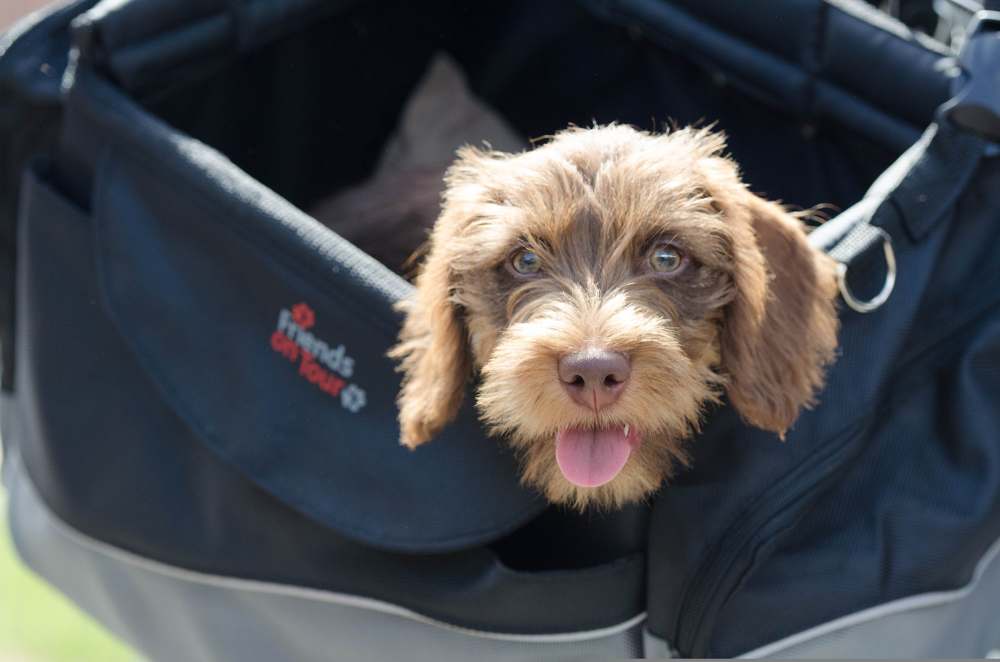
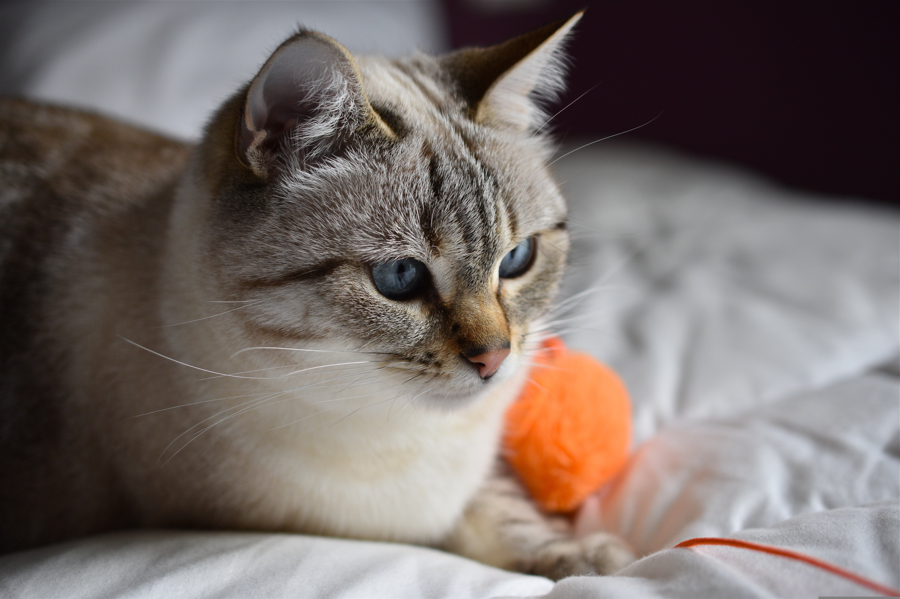
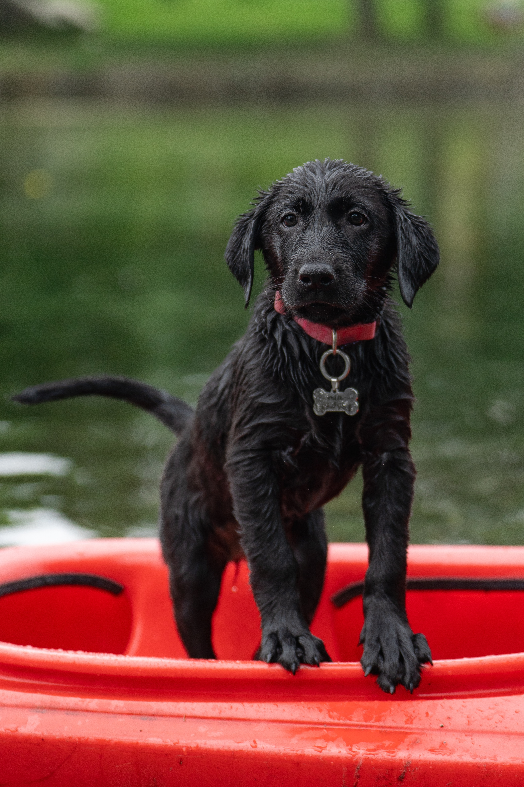
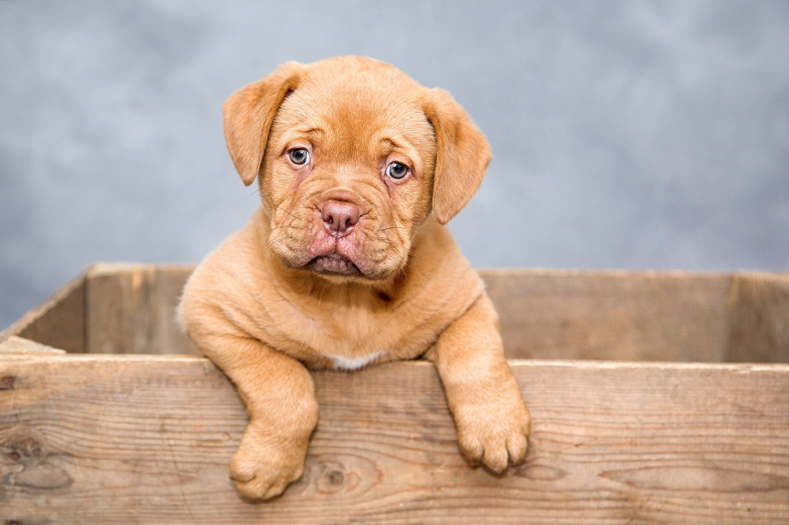
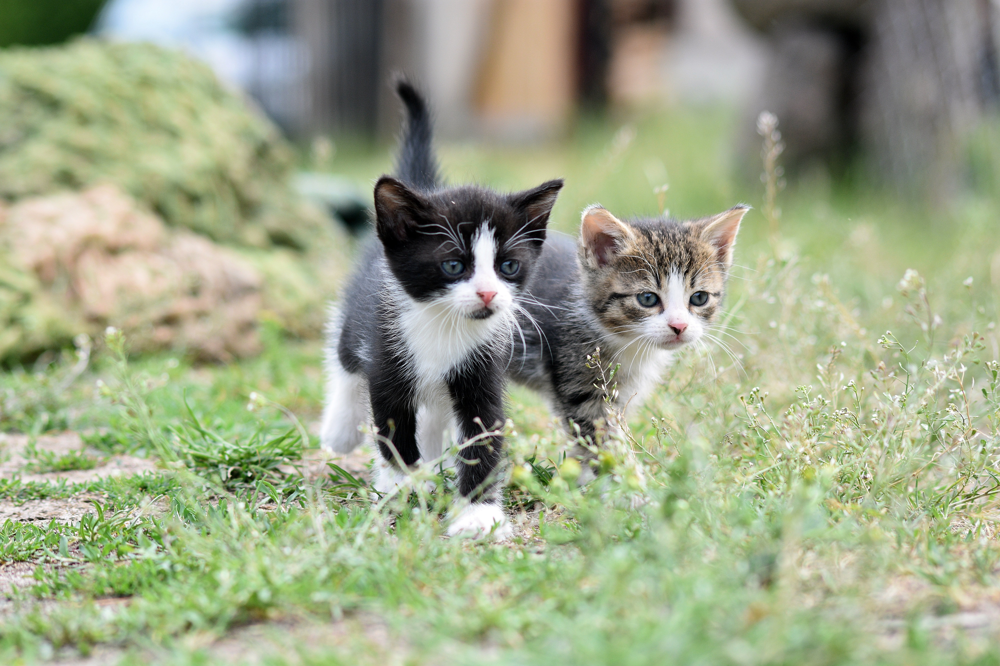
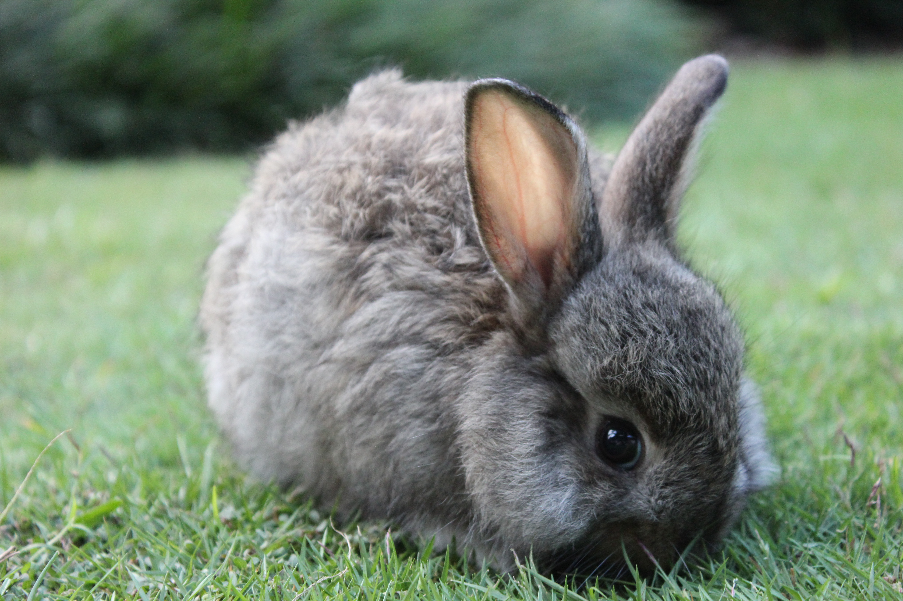

Dogs

Adopt a Pet!



Choose from the folders below and view more pets on the home page.








Safe Paws is a community pet adoption center focused on helping rescued animals find loving homes. We support responsible adoption and provide guidance before and after adoption.